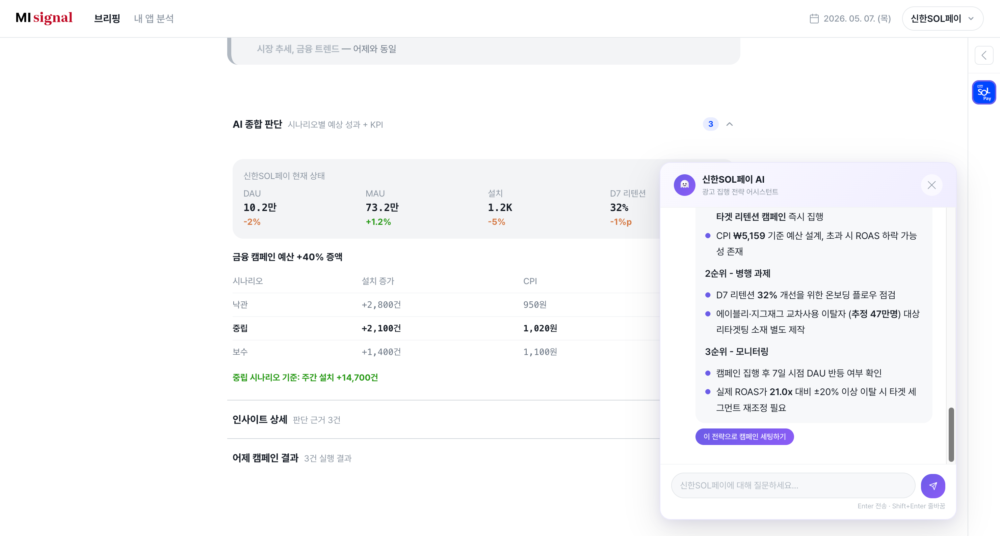

MI Signal
자사 앱 데이터 + 외부 시그널 5종을 결합해,
지금이 광고를 집행할 최적 타이밍인지
알려주는 인텔리전스 플랫폼

AI Championship Season 1 · 17팀 중 3등 수상
MI Signal
광고 집행 타이밍 인텔리전스 플랫폼
Role
Product Designer · 기획~구현 전 과정
Team
2인 (PD + FE) · Kiro 풀타임 활용
Duration
12일 (2026.04)
프로젝트 요약
12
일 개발 기간
44
React 컴포넌트
24
API 라우트
50K+
분석 가능 앱
내 역할
서비스 기획 · UX 설계 · 디자인 시스템 · HTML 프로토타입 · React 구현 · API 연동 · AI 기능 구현 · QA · 배포
기술 스택
마케터가 매일 아침 답을 찾는 질문
"지금이 광고를 집행할 타이밍인가?"
매일 5곳을 돌아다녀야 하는 마케터
| 확인 항목 | 문제 |
|---|---|
| 자사 앱 성과 | 수치만 보이고 "왜"를 모름 |
| 경쟁사 동향 | 자사 데이터와 연결 안 됨 |
| 외부 환경 | 복합 시그널 해석 불가 |
| 업계 뉴스 | 집행과 연결 짓기 어려움 |
| 최종 판단 | 마케터의 감과 경험에 의존 |
문제의 본질: 시그널의 분산
기온이 급상승하고, 연휴가 다가오고, 검색량이 급등하고, 경쟁사가 프로모션을 시작했다면 —
이건 드문 집행 적기입니다.
하지만 이 시그널들이 각각 다른 도구에 흩어져 있어서, 마케터가 직접 조합해야 합니다.
연간 수동 조합
250시간+
판단→집행
수일 소요
MI Signal — 복합 시그널 기반 집행 판단 플랫폼
브리핑
날씨+특일+검색+경쟁+뉴스 → AI가 "지금 집행하세요" 판단
내 앱 분석
사용자·시장·경쟁 4개 관점 심층 분석을 한 화면에
원클릭 집행
분석 → 캠페인 초안 자동 생성 → MI Ads 내보내기
분석→집행 퍼널
브리핑 확인 → 타겟 확인 → 캠페인 생성 → MI Ads 내보내기 (5분)
4개 관점 심층 분석 — 한 화면에서 의사결정
사용자 · 시장 · 경쟁 · 요약 — Snowflake 실데이터 기반 분석

왜 IGAW만 할 수 있는가 — 데이터 생태계 통합
| IGAW 자산 | MI Signal에서의 역할 |
|---|---|
| DMP 수천만 ADID | 사용자 세그먼트 + 교차사용 분석 |
| SSP 광고 로그 | 채널별 CPM + 경쟁사 광고 활동 감지 |
| ATD 채널 성과 | 멀티채널 ROAS + CPI 벤치마크 |
| 모바일인덱스 | 경쟁사 MAU/DAU + 50,000+ 앱 검색 |
| MI Ads | 분석 → 집행 원클릭 연결 |
이 5개 데이터 소스를 하나의 서비스에서 결합할 수 있는 건 IGAW뿐입니다.
외부 업체가 이 조합을 재현하기 어렵습니다.
기존 제품과의 시너지
모바일인덱스
"보기만 하던 데이터"를 집행 의사결정으로 연결 → 프리미엄 업셀
MI Ads
데이터가 집행 의사를 만들고, 의사가 집행을 만듦 → 집행량 증가
DMP/SSP/ATD
자사 데이터 자산을 광고주에게 직접 가치로 전달 → 데이터 수익화
비즈니스 임팩트
MI Ads 집행량 증가 + 모바일인덱스 업셀 + 데이터 수익화 3중 구조
핵심 의사결정 — 기획자로서 내린 판단
포지셔닝 전환
Before: 광고 실행 효율화 (편의성 도구)
After: 광고를 하고 싶게 만드는 수요 창출 플랫폼
근거: 경영진 워크숍 "편의성은 기본값이지 셀링 포인트가 아니다"
페이지 구조 변경
Before: 4페이지 분리 구조
After: 3탭 단일 페이지 (서비스·브리핑·분석)
근거: 데모 시연 시 페이지 전환이 스토리텔링을 끊는 문제
데이터 전략
문제: 구현 가능성 58%
해결: 외부 API 5종 + UX 대응 설계 → 100%
원칙: "목업으로 채우지 않고, 실데이터 기반으로 구현한다"
HTML→React 마이그레이션
상황: 4,000줄 HTML → iframe 임베드
결정: iframe 폐기 → Tailwind + React 완전 재구현
사유: React 컨텍스트 단절, SEO 불가, 접근성 위반
12일 타임라인
Day 1~2
방향 설정
경영진 방향 분석 · 포지셔닝 전환 · 벤치마크 7건
Day 2~4
데이터 검증
Snowflake 36개 테이블 전수조사 · 구현 가능성 58%→100%
Day 3~5
설계
기획서 v3 · 컴포넌트 트리 40+ · TDS 토큰 매핑
Day 5~7
HTML 프로토타입
4,000줄 단일 HTML로 전체 화면 시각화
Day 7~10
React 구현
44개 컴포넌트 + 24개 API + AI 채팅 시스템
Day 10~12
QA + 배포
30건 QA · 다크모드 전수 대응 · AWS Amplify 배포
협업 방식
PD(기획/디자인) + FE(프론트엔드)
직무 구분 없이 전과정 참여
Kiro 풀타임 활용
산출물
📄 리서치 문서 25편
🧩 React 컴포넌트 44개
🔌 API 라우트 24개
🎨 디자인 토큰 50+
✅ QA 수정 30건
AI 활용 — 풀스택 PD 워크플로우
Kiro를 코드 생성기가 아니라, 기획부터 QA까지 전 과정의 구조적 파트너로 활용
STEERING
데이터 가이드 주입 → API 구현 시 테이블·컬럼 자동 검증
HOOKS
파일 수정 시 데이터 정합성 자동 체크 → 실수 사전 차단
SPECS
기능별 요구사항 → 설계 → 태스크 구조화
MULTI-AI
GPT로 프롬프트 고도화 → Kiro에 단계적 입력
의사결정 원칙
AI는 선택지를 만들고,
사람이 판단한다.
• AI가 A, B, C 제시 → 비즈니스 맥락으로 선택
• AI가 코드 생성 → 스크린샷으로 결과 검증
• AI가 데이터 조회 → "UI에 의미 있는가?" 해석
• AI가 QA 발견 → 수정 우선순위 판단
프로덕트 디자이너 관점의 AI 활용
기획→설계→구현→QA가 한 사람 안에서 완결되는 워크플로우
| 단계 | AI가 한 것 | 내가 결정한 것 | 효과 |
|---|---|---|---|
| 아이데이션 | 워크숍 자료에서 방향 선택지 3개 제시 | "수요 창출" 방향 채택, 광고주 직접 타겟 확정 | 방향 전환 |
| 리서치 | 벤치마크 7건 분석, Snowflake 테이블 스캔 | 사내 데이터를 어떻게 비즈니스화할지 결정 | 실현 가능성 |
| 설계 | HTML 프로토타입 코드 생성 | 정보 위계, 시그널 컬러 체계, 레이아웃 비율 | 실시간 검증 |
| 구현 | 44개 컴포넌트 + 24개 API 코드 생성 | 컴포넌트 분리 기준, 상태 관리 구조 확정 | 핸드오프 제거 |
| QA | 코드 수정 실행, 다크모드 오버라이드 생성 | QA 기준 수립, 이슈 심각도·우선순위 판단 | WCAG AA |
핸드오프 제거
기획→구현이 한 사람 안에서 완결
실시간 프로토타이핑
Figma 정적 목업 대신 동작하는 HTML
데이터 기반 설계
"이 데이터가 존재하는가?" 설계 단계에서 검증
성과 및 검증
🏆 대회 성과
AI 챔피언십 시즌 1 · Track B
17팀 중 3등 수상
1차 심사 TOP 10 진출 → 최종 3등
💬 내부 검증 (세일즈·운영 인터뷰)
"광고주 미팅 전에 브리핑 화면을 보여주면 설득 근거가 생긴다"
— 세일즈
"매일 아침 여러 대시보드를 돌아다니던 걸 한 화면에서 볼 수 있다"
— 운영
"경쟁사 교차사용 데이터를 보여주면 방어 캠페인 필요성을 바로 납득시킬 수 있다"
— 운영
개발 생산성
12
일 개발
44
컴포넌트
24
API
25
리서치 문서
30
QA 수정
50K+
분석 가능 앱
TAKEAWAY
AI를 구조적 파트너로 활용해
기획부터 배포까지 직접 실행하는
풀스택 프로덕트 디자이너
• 바로 시키지 않고, 먼저 조사하고 구조화한 뒤에 시킨다
• AI에게 시키기 전에 규칙을 먼저 세팅한다
• AI는 선택지를 만들고, 사람이 판단한다
• 스크린샷으로 실시간 피드백하며 품질을 보증한다
Hazel.유정화
Product Designer